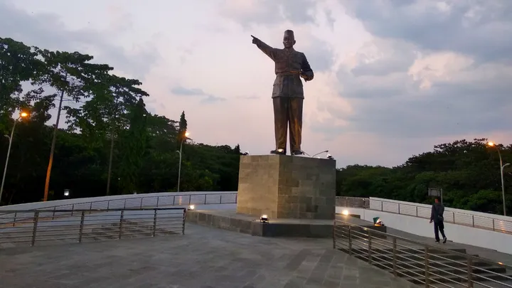

Benteng Van Den Bosch
Bangunan peninggalan kolonial Belanda penuh sejarah...
Baca Selengkapnya

Museum Trinil
Tempat ditemukannya fosil manusia purba Pithecanthropus...
baca selengkapnya

Monumen Soerjo
Monumen bersejarah untuk mengenang Gubernur Soerjo....
Baca Selengkapnya

Rumah Dr Radjiman
Radjiman adalah salah satu pendiri Boedi Uotomo....
baca selengkapnya

Patung Pemuda Soekarno
Taman Pemuda Soekarno, sebuah kompleks taman yang megah dan bersejarah
baca selengkapnya